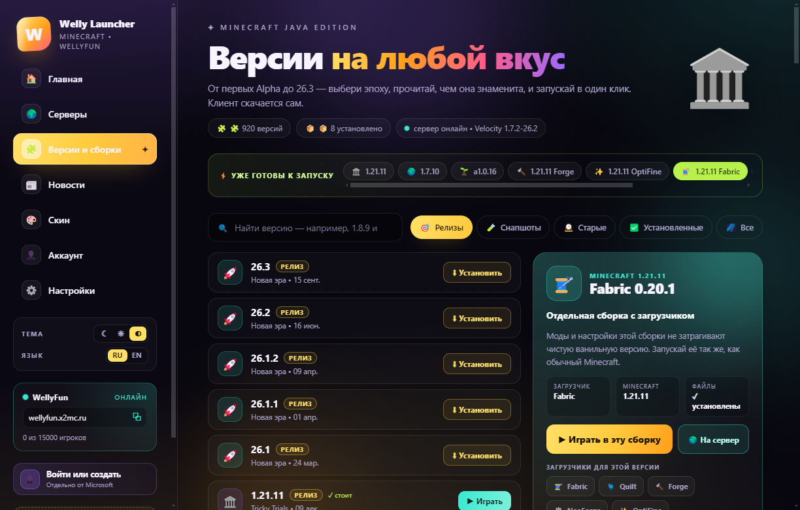

Fabric
Лёгкий загрузчик модов и оптимизаций. Ставится профилем, без отдельного инсталлятора.
- Профиль Fabric с библиотеками из официальной меты
- Своя версия в списке — рядом с ванильной
- Быстрый старт и минимум лишних файлов
Fabric • Quilt • Forge • NeoForge • OptiFine
Выбрал версию Minecraft — в панели появились кнопки Fabric, Quilt, Forge, NeoForge и OptiFine. Лаунчер скачает официальные файлы, соберёт отдельную версию и запустит её как обычную сборку.
Пять загрузчиков
Список сборок подтягивается под выбранную версию Minecraft, рекомендуемая уже отмечена — остаётся нажать «Установить».
Лёгкий загрузчик модов и оптимизаций. Ставится профилем, без отдельного инсталлятора.
Развитие идей Fabric: тот же формат модов, но свой загрузчик и свои библиотеки.
modsКлассический загрузчик модов для больших сборок и старых версий Minecraft.
Современная ветка Forge для новых версий Minecraft и крупных модпаков.
21.11.x для Minecraft 1.21.11Шейдеры и оптимизация графики. Ставится патчером OptiFine поверх выбранной версии.
Чистый Minecraft без загрузчиков — база, на которую ставятся все сборки.
Порядок действий
Всё в том же окне, где выбираешь версию Minecraft.
На странице «Версии» найди нужную версию в списке и нажми на неё.
Если ванильной версии ещё нет, лаунчер скачает её вместе с библиотеками.Fabric, Quilt, Forge, NeoForge или OptiFine — и нужную версию загрузчика в списке.
Рекомендуемая сборка выбрана заранее, менять её не обязательно.Одна кнопка — установка. Готово: кнопка меняется на «Играть», сборка появляется в списке версий.
Прогресс виден внизу окна, установку можно отменить.versions и не ломает ванильную версию.

Без сюрпризов
1.21.11-forge-61.2.4,
neoforge-21.11.48 или quilt-loader-0.30.1-1.21.11.
Запускать можно любую.
.jar
кладутся в папку mods выбранной сборки. Лаунчер ставит сам загрузчик,
а не подбирает моды.
Дальше
Готово к сборке
Скачай лаунчер, выбери версию Minecraft и нужный загрузчик.